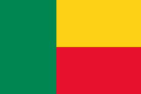

Francia (en francés: Franceⓘ), oficialmente la República Francesa (République françaiseⓘ), es un país soberano transcontinental que se extiende por Europa Occidental y por regiones y territorios de ultramar en América y los océanos Atlántico, Pacífico e Índico.
franciaAlemania (en alemán: Deutschlandⓘ), oficialmente República Federal de Alemania (Bundesrepublik Deutschlandⓘ), es uno de los veintisiete Estados soberanos que forman la Unión Europea. Constituido en Estado social y democrático de derecho, su forma de gobierno es la república parlamentaria
 alemania
alemania
España, formalmente Reino de España, es un país soberano transcontinental, constituido en Estado social y democrático de derecho y cuya forma de gobierno es la monarquía parlamentaria. Es uno de los veintisiete Estados soberanos que forman la Unión Europea.
 España
España
Italia, oficialmente la República Italiana (en italiano: Repubblica Italiana pronunciado /re'pub:lika ita'ljana/), es un país soberano transcontinental, constituido en una república parlamentaria compuesta por veinte regiones, integradas estas, a su vez, por ciento once provincias
 Italia
Italia
Portugal (puɾtuˈɣaɫⓘ) (nombre oficial República Portuguesa) es un Estado de derecho democrático, ubicado en el suroeste de Europa, en la península ibérica. Es uno de los veintisiete Estados soberanos que forman la Unión Europea y su capital y ciudad más poblada es Lisboa.
 Portugal
Portugal
Afganistán (en pastún: افغانستان, Afġānistān; en darí: افغانستان, Afġānestān; pronunciado /avɣɒnesˈtɒn/), oficialmente el Emirato Islámico de Afganistán (en pastún: د افغانستان اسلامي امارت, Da Afġānistān Islāmī Imārāt; en darí: امارت اسلامی افغانستان, Imârat-i Islâmī-yi Afġânistân), es un país montañoso sin salida al mar ubicado en Asia del Sur
 Afganistán
Afganistán
Arabia Saudita o Arabia Saudí, oficialmente Reino de Arabia Saudita o Reino de Arabia Saudí (en árabe: المملكة العربية السعودية, al-Mamlaka al-ʿarabīya as-saʿūdīya), es un país de Asia occidental, ubicado en la península arábiga —Oriente Próximo
Arabia SauditaArmenia (en armenio: Հայաստան Hayastanⓘ), oficialmente la República de Armenia (Հայաստանի Հանրապետություն, Hayastani Hanrapetut'yun), es un país de Transcaucasia sin salida al mar localizado en Europa Oriental y Asia Occidental.
ArmeniaCatar (en árabe: قطر, romanizado: Qaṭar; AFI: [ˈqɑtˁɑr]; árabe del Golfo [ɡɪtˤɑr]), cuyo nombre oficial es Estado de Qatar (en árabe: دولة قطر, romanizado: Dawlat Qaṭar), es un Estado soberano árabe ubicado en el oeste de Asia
CatarFilipinas —oficialmente la República de Filipinas (en tagalo: Republika ng Pilipinas; en inglés: Republic of the Philippines)— es un país insular (véase archipiélago) situado en el Sudeste Asiático, sobre el océano Pacífico. Su capital es Manila
 Filipinas
Filipinas
Angola, cuyo nombre oficial es República de Angola (en portugués, República de Angola), es un país ubicado al sur de África que tiene fronteras con Namibia por el sur, con Zambia por el sureste, con la República Democrática del Congo por el norte y el noreste
 Angola
Angola
Benín (en francés: Bénin), hasta 1975 Dahomey, oficialmente la República de Benín (en francés: République du Bénin), es un país ubicado en el oeste de África. Está limitado por Togo al oeste, por Nigeria al este y por Burkina Faso y Níger al norte
 benninLibia (en bereber: Libu, árabe: دولة ليبيا), oficialmente el Estado de Libia, es un país soberano republicano del norte de África. Su capital es Trípoli. Limita con el mar Mediterráneo al norte, al oeste con Túnez y Argelia, al sur con Níger y Chad, al sureste con Sudán
LibiaChad (en francés: Tchad; en árabe: تشاد, romanizado: Tšād), cuyo nombre oficial es República del Chad, es un país sin litoral ubicado en África Central. Limita con Libia al norte, con Sudán al este, con la República Centroafricana al sur, Camerún y Nigeria al suroeste
 chad
chad
Australia, oficialmente, la Mancomunidad de Australia (en inglés: Commonwealth of Australia, AFI: /ˈkɒmənˌwelθ əv ɒˈstreɪljə/), es un país soberano que comprende la parte continental del continente australiano o Sahul, la isla de Tasmania y numerosas islas menores
 australia
australia
Nueva Zelanda (en inglés: New Zealand; en maorí, Aotearoa, «tierra de la gran nube blanca») es un país soberano e insular ubicado en Oceanía, localizado en el suroeste del océano Pacífico, cerca de Australia y constituido en una monarquía parlamentaria
 NUEVA ZELANDA
NUEVA ZELANDA
Fiyi, oficialmente la República de Fiyi (en fiyiano: Matanitu Tugalala o Viti; en inglés: Republic of Fiji; en hindi fiyiano: फ़िजी गणराज्य, Fijī Gaṇarājya), es un país insular de Oceanía ubicado en el océano Pacífico y constituido en una república
fiyi
Las Islas Marshall, oficialmente conocidas como República de las Islas Marshall (en inglés, Republic of the Marshall Islands; en marshalés, Aolepān Aorōkin Ṃajeḷ), son un país insular ubicado en el océano Pacífico, en la región de Micronesia. Formó parte del Territorio en Fideicomiso
islasmarshllTonga, oficialmente Reino de Tonga, (en tongano: Pule'anga Fakatu'i 'o Tonga; en inglés: Kingdom of Tonga) es un país de Oceanía integrado dentro de la Polinesia y constituido como una monarquía parlamentaria. A través de su territorio marítimo, limita al norte con la colectividad
tonga<Brasil, oficialmente República Federativa de Brasil (República Federativa do Brasilⓘ), es un país soberano de América del Sur que comprende la mitad oriental del continente y algunos grupos de pequeñas islas en el océano Atlántico. Su capital es Brasilia y su ciudad más poblad
 brasil
brasil
México ([ˈmexiko]ⓘ), cuyo nombre oficial es Estados Unidos Mexicanos, es un país soberano ubicado en la parte meridional de América del Norte; su capital y ciudad más poblada es la Ciudad de México. De acuerdo con la constitución vigente
 mexico
mexico
EUA», «US», «USA» y «United States» redirigen aquí. Para otras acepciones y los barcos con ese nombre, véanse respectivamente EUA (desambiguación), US, USA (desambiguación) y USS United States. Estados Unidos (EE. UU.; en inglés: United States o US), denominado oficialmente
 e
e
Argentina, oficialmente República Argentina, es un país soberano de América del Sur, ubicado en el extremo sur y sudeste de dicho subcontinente. Adopta la forma de gobierno republicana, democrática, representativa y federal. Argentina está organizada como un Estado federal descentraliza
 argentina
argentina
Perú (en quechua y en aimara: Piruw), oficialmente República del Perú, es un país soberano ubicado en el oeste de América del Sur. Limita al norte, con Ecuador y Colombia; al este, con Brasil y Bolivia; al sur, con Chile; y al oeste, con el océano Pacífico, que bordea su costa
peru| europa | america | asia | africa | Oceania |
|---|---|---|---|---|
| francia | brasil | filipinas | angola | australia |
| alemania | mexico | catar | bennin | nuevazelanda |
| españa | estadounidos | armenia | libia | fiyi |
| italia | argentina | arabiasaudita | comores | islasmarshalls |
| portugal | peru | afganistan | chad | tonga |